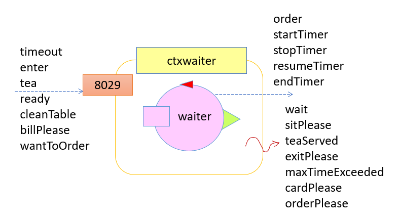
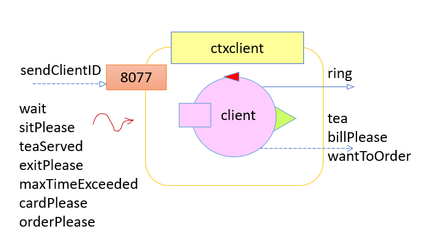

Requirements
Requirements
Assumptions for Sprint 2
- assumption 1 : there will be two customer at the same time in the tearoom (instead of one) and we also assume that any client will arrive only if there is at least one free and clean teatable
- assumption 2 : task will be handled in order of arrival (no priority policy) with the exception of cleaning the table. The action of cleaning a table may be interupted to execute tasks that have higher priority (actions that let the custumers wait less time for the service)
- assumption 3 : we will develop a Manager's web page to monitor states interesting for this second Sprint (no Hall state for now)
Requirement analysis
Introduction
Since most of the requirement analysis done during Sprint 1 remains valid for this second Sprint we will report hereunder only the aspects that have changed due to the new assumptions. The requirement analysis written for the previous Sprint can be found here : Tearoom COVID-19 - Sprint 1.Manager
Although the requirements for the manager have not changed it is worth noting that the Hall state is not interesting to observe since we decided with assumption 1 that we will have exactly two client inside the tearoom (meaning no client will ever have to wait outside). Therefor hall state will not be considered by the Manager's web page for this second Sprint. Summarizing the states that the Manager can observe using the web gui that we will provide will be:- Teatables states: it stores information about the presence of a customer at a table and if the table is clean or not;
- Waiter state: it stores information about the task that the waiter is currently performing;
- Barman state: it stores information about the task that the barman is currently performing;
Waiter
One of the requirement given by our client is to reduce as much as possible the waiting time of the requests coming from each client. This means that our waiter should prioritize action related to active client inside the tearoom than action not related to them. This requirement could be ignored in Sprint 1 since the presence of only one client meant that the waiter was dedicated to that client and the waiting time was already at the minimum. Now that we have two client at the same time we need to re-evaluate its significance and the impact this has on our system. After a second discussion with the client it was decided by mutual agreement that the action of cleaning a table must be done only if no action related to active client inside the room can be performed. As analysts we have also considered other actions that can be performed by the waiter to see if some of these should be considered with a different degree of priority. We came to the conclusion that only the action of cleaning a teatable is not directly linked to the active customers inside the safe tearoom and therefore it's the only one that needs to have a lower priority.Model of the requirements
As already described in the document of the Sprint 1 we will use QAkctor modelling language to formalize the essential aspects of our system. In this section we will report only the differences with respect to what was written in the previous document.Qak Smartbell model
 This model remained unchanged from the previous Sprint
This model remained unchanged from the previous SprintQak Barman model
 This model remained unchanged from the previous Sprint
This model remained unchanged from the previous SprintQak Waiter model
 In the waiter model we reported the client-waiter interaction messages: as already examined in the previous Sprint document, the Client is not part of our system (that the team has to develop), but only a component to mimic/simulate a real-person client/customer. Therefore, all client-waiter interaction relative messages are there only as a tool to test the waiter and, then, as a way to better understand the essential aspects of the waiter actor. Following some observations on the previous client and waiter models, the team decided to substitute client-waiter request-reply interactions with dispatch and event messages (this decision brought a change on wantToOrder-orderPlease and billPlease-cardPlease messages): a dispatch-event better catch the idea of a real client that won't wait in a blocking way for the waiter to arrive at the table, but will go on doing something else (like texting with a friend, calling someone on the phone...). Hence, we decided to apply a less blocking and more asynchronous interaction between the two actors. @TONNO : controllare consistenza timeout messageSystem waiter//-----------SMARTBELL COMMMUNICATION-------------- Dispatch enter : enter(CLIENT_ID)//------------------------------------------------- //----------CLIENT COMMUNICATION-------------------------------- Event wait : wait(CLIENT_ID, MAX_TIME)Event sitPlease : sitPlease(CLIENT_ID, TEATABLE_ID)Dispatch wantToOrder : wantToOrder(TEATABLE_ID)Dispatch tea : tea(TEATABLE_ID, TEA)Event teaServed : teaServed(TEATABLE_ID, TEA)Event orderPlease : orderPlease(TEATABLE_ID)Dispatch billPlease : billPlease(TABLE_ID)Event cardPlease : cardPlease(ARG)Event maxTimeExceeded : maxTimeExceeded(TEATABLE_ID)Event exitPlease : exitPlease(CLIENT_ID)//-------------------------------------------------------------- //-----------BARMAN COMMUNICATION----------------------------- Dispatch order : order(TEATABLE_ID,TEA)Dispatch ready : ready(TEATABLE_ID,TEA)//------------------------------------------------------------ //----------SELF MESSAGES------------------------------------- Dispatch cleanTable : cleanTable (TEATABLE_ID)//------------------------------------------------------------ //-----------TIMER COMMMUNICATION----------------------------- Dispatch startTimer : startTimer(TEATABLE_ID, MAX_TIME)Dispatch stopTimer : stopTimer(TEATABLE_ID)Dispatch resumeTimer : resumeTimer(TEATABLE_ID)Dispatch endTimer : endTimer(TEATABLE_ID)Event timeout : timeout(TEATABLE_ID)//------------------------------------------------------------ In the space below we have reported the new qak model which has undergone some changes compared to the previous version.
The action of cleaning a teatable has therefore been modified in such a way that the arrival of any other message (and so a new task to perform) interrupts it. By doing this, the waiter can give priority to other actions which, as already explained, contribute to the goal of making customers wait as little as possible inside the tearoom. Changes related to the interruptible cleaning action are highlited in
yellow andorange since they make up the majority of the changes made to the waiter.Context ctxsmartbell ip [host="localhost" port=8030] Context ctxclient ip [host="whateverip" port=8077] Context ctxbarman ip [host="localhost" port=8066] Context ctxwaiter ip [host="127.0.0.1" port=8020] Context ctxtimer ip [host="someip" port=8010] ExternalQActor barman context ctxbarman ExternalQActor smartbell context ctxsmartbell ExternalQActor client context ctxclient ExternalQActor timer context ctxtimerQActor waiter context ctxwaiter { [# var MaxWaitTime : Long val MaxStayTime = 10000L // 10 sec val IdleTime = 200L // 200 ms var ClientToConvoy = "" //variables useful for handling the action of cleaning tableval CleanTime = 2000L var RemainigCleaningTime = CleanTime var teatableToClean = 0 #]State s0 initial { discardMsg Off//we don't want to loose any message }Goto restingAtHome State restingAtHome { if [# currentPos() != HomePos() #] { [# goToHome() #]} println("waiter | No task to do. Chilling out at home...") }Transition t0 whenMsg enter -> handleEnter whenEvent timeout -> handleTimeout whenMsg wantToOrder -> handleOrder whenMsg ready -> serveTeaToClient whenMsg billPlease -> handlePayment whenMsg cleanTable -> cleanTeatable State doATask { println("waiter | checking if there is a task to do...") }Transition t0 whenTimeVar IdleTime -> restingAtHome whenMsg enter -> handleEnter whenEvent timeout -> handleTimeout whenMsg wantToOrder -> handleOrder whenMsg ready -> serveTeaToClient whenMsg billPlease -> handlePayment whenMsg cleanTable -> cleanTeatable State handleEnter { onMsg(enter : enter(CLIENT_ID)){if [# wasCleaningActionInterrupted() #]{ [# RemainigCleaningTime = calculateNewCleaningTimeForTeatable(teatableToClean)#] } println("waiter | a client with client_id ${payloadArg(0)} asked to enter the safe tearoom...") if [# freeAndCleanTable() == 0 #] { //NO free and clean table [# MaxWaitTime = getMaxWaitTime() #] println("waiter | ... but since there is no free and clean teatable I ask ${payloadArg(0)} to wait a little ($MaxWaitTime)!")emit wait : wait($payloadArg(0), $MaxWaitTime) } else { // there is a free and clean table println("waiter | ... and since there is a free and clean teatable I let ${payloadArg(0)} in!") //convoying is atomic with enter when there is a free table [# ClientToConvoy = payloadArg(0) #] } } //onMsg }//In this second Sprint since we will handle exactly 2 customer it will never happen that a client has to wait // so freeAndCleanTable is always > 0 Goto convoyClientToTable if [# freeAndCleanTable() > 0 #] else checkIfWasCleaning State checkIfWasCleaning {//Temporary state made to implement an else-if statement for Transition from state related to action that can // interrupt cleaning action }Goto cleanTeatable if [# wasCleaningActionInterrupted() #] else doATask State convoyClientToTable { [# var Teatable = getFreeAndCleanTeatable() //ID teatable MaxWaitTime = 0L goToEntranceDoor() //prepare to convey the client to a teatable #]emit wait : wait($ClientToConvoy , $MaxWaitTime) println("waiter | convoying client $ClientToConvoy to teatable $Teatable ...") [# reachTeatablePos(Teatable) updateTeatableState(Teatable, "BUSY") #]emit sitPlease : sitPlease($ClientToConvoy, $Teatable ) //start timer to count until MaxStayTimeforward timer -m startTimer : startTimer($Teatable) }Goto cleanTeatable if [# wasCleaningActionInterrupted() #] else doATask State cleanTeatable { onMsg(cleanTable : cleanTable(T)) {//first we reach the teatable [#reachTeatablePos(payloadArg(0))#] // then we clean the teatable println("waiter | cleaning the teatable ${payloadArg(0)}") [#teatableToClean = payloadArg(0).toInt()#] } //onMsgif [#wasCleaningActionInterrupted()#] { //first we reach the teatable [#reachTeatablePos(teatableToClean)#] // then we clean the teatable println("waiter | retry to finish cleaning the teatable $teatableToClean") } } //cleaning is an interruptible action that MUST be interrupted if Waiter can perform other actionsTransition t0 whenTimeVar RemainigCleaningTime -> cleaningFinished whenMsg enter -> handleEnter whenMsg wantToOrder -> handleOrder whenMsg ready -> serveTeaToClient whenMsg billPlease -> handlePayment State cleaningFinished {//update teatable state [#updateTeatableState(payloadArg(0), "CLEAN")#] //reset RemainigCleaningTime for that table [#RemainigCleaningTime = resetRemainingCleaningTime()#] } //As we have just one client at a time (Assumption 1), we don't have to check if there are clients waiting to enterGoto doATask State handleOrder { onMsg(wantToOrder : wantToOrder(TABLE)){if [# wasCleaningActionInterrupted() #]{ [# RemainigCleaningTime = calculateNewCleaningTimeForTeatable(teatableToClean)#] } //Stop counting for orderTime nowforward timer -m stopTimer : stopTimer($payloadArg(0)) //reach teatable position to simulate the action of taking an order [#reachTeatablePos(payloadArg(0))#] //simulating the action of asking the client what he want to orderemit orderPlease : orderPlease($payloadArg(0)) } } Transition t0 whenMsg tea -> takingOrderState takingOrder { onMsg(tea : tea(T, TEA)){ //send the order to barman println("waiter | client at teatable ${payloadArg(0)} ordered a ${payloadArg(1)}! Sending order to Barman...")forward barman -m order : order($payloadArg(0), $payloadArg(1)) } }Goto cleanTeatable if [# wasCleaningActionInterrupted() #] else doATask State serveTeaToClient { onMsg(ready : ready(T,D)){if [# wasCleaningActionInterrupted() #]{ [# RemainigCleaningTime = calculateNewCleaningTimeForTeatable(teatableToClean)#] } println("waiter | order for table ${payloadArg(0)} ready! Serving order...") [# goToServiceDesk() #] delay 200 [# reachTeatablePos(payloadArg(0)) #]emit teaServed : teaServed($payloadArg(0), $payloadArg(1) ) //start counting for consumingTime NOW //start timer to count until MaxStayTimeforward timer -m resumeTimer : startTimer($payloadArg(0)) } }Goto cleanTeatable if [# wasCleaningActionInterrupted() #] else doATask State handlePayment { onMsg(billPlease : billPlease(T)){if [# wasCleaningActionInterrupted() #]{ [# RemainigCleaningTime = calculateNewCleaningTimeForTeatable(teatableToClean)#] } [# ClientToConvoy = getClientAtTable(payloadArg(0)) #] println("waiter | ending timer for table ${payloadArg(0)}")forward timer -m endTimer : endTimer($payloadArg(0)) println("waiter | client at table ${payloadArg(0)} finished before MaxStayTime expired...") println("waiter | Reaching table ${payloadArg(0)} ...") [#reachTeatablePos(payloadArg(0))#] println("waiter | Arrived at table ${payloadArg(0)}, requesting credit card...")replyTo billPlease with cardPlease : cardPlease(amount_to_pay) } delay 200 //simulating client giving credit card and payment time println("waiter | convoying client to exit door...") [#goToExitDoor()#]emit exitPlease : exitPlease($ClientToConvoy) //waiter sends itself a message to remember to clean the table [# TableToClean = getTableFromClientID(ClientToConvoy)#]forward waiter -m cleanTable : cleanTable($TableToClean) //update teatable state [#updateTeatableState(TableToClean, "DIRTY")#] }Goto cleanTeatable if [# wasCleaningActionInterrupted() #] else doATask State handleTimeout { onMsg(timeout : timeout(T)){ println("waiter | Time exceeded for client at table ${payloadArg(0)}") println("waiter | reaching table ${payloadArg(0)}...") [# reachTeatablePos(payloadArg(0)) ClientToConvoy = getClientAtTable(payloadArg(0)) #] println("waiter | communicating to client $ClientToConvoy that he has to pay and leave...")emit maxTimeExceeded : maxTimeExceeded($payloadArg(0), amount_to_pay) } }Goto handlePayment }It is worth noting that as Analyst we decide to not interrupt the cleaning action if a timeout happen. We consider this situation as giving a little more time and letting the client finish it's drink while the waiter finish it's current action. Furthermore, in this case, interrupting the cleaning action is not useful to reduce the waiting times of active customers in the safe tearoom but it is only a way to free a teatable faster, which in any case must be cleaned before it can be used.
Functional TestPlan
The considerations made in the last sprint (Sprint 1) are still valid in this second Sprint.
Client MOK
 Here, since the client should be a human being, there is the need of MOK messages to simulate a correct human behaviour. Hereunder are described the messages related to the client actor (qakctor).
System clientRequest ring : ring(ARG)Reply sendClientID : sendClientID(CLIENT_ID)Event wait : wait(CLIENT_ID, MAX_TIME)Event sitPlease : sitPlease(CLIENT_ID, TEATABLE_ID)Dispatch tea : tea(TEA)Event teaServed : teaServed(TEATABLE_ID, TEA)Dispatch billPlease : billPlease(TEATABLE_ID)Event cardPlease : cardPlease(TEATABLE_ID)Event maxTimeExceeded : maxTimeExceeded(TEATABLE_ID) //the waiter sends this message when it is already at the tableEvent exitPlease : exitPlease(CLIENT_ID)All interactions have been modeled as "fire-and-forget" (message events and dispatching) since a request-reply interactions doesn't seem to be needed from requirements (sender doen't need a specific reply from receiver). Moreover, the waiter doesn't know directly the client (apart from its client identifier), hence it needs to communicate through events.
The client MOK has changed only in the request-reply messages as described in the waiter QAK model. This way (with a dispatch-event interaction), when a client wants to order or wants to pay, the web page won't block, but a "waiting message" will be displayed, so that the client knows that the waiter will arrive at its table as soon as possible.
Problem analysis
Logical architecture:
The logical system architecture remained mostly unchanged and it's described by the underlying image:

Due to the possibility of having two clients inside the tearoom at the same time, it is neccessary to take into account different timings, one for teatable. There are various ways of implementing the management of those timings: as analysts we found in a mastertimer actor a possible solution that allows us to hide timer realization details to the waiter (Information Hiding Principle).In fatc, the timer (mastertimer) exposes an interface that won't change and, at the same time, it allows the presence of highly specialized components (Single Responsibility Principle) that in the below model we called subtimers. More details are provided in the mastertimer qak model. However, it will be designers' duty (in a design phase) to decide which is the best choice for the timer implementation.

The manager, through the web page, must be able to see the state of the main system components (Barman, Waiter and Tearoom). Therefore, it is necessary that these components expose their states to the outside and that the manager's web page is notified every time these states changes so as to be able to keep updated the information provided to the manager. As analysts we have concluded that in order to allow a real-time update, it is necessary for the components to notify the manager of the change in their states and not vice versa, i.e. the manager who periodically re-asks for their states. Again, there are different ways to achieve this type of interaction and different technologies can be used. As analysts, we think CoAP may be a suitable choice. In fact, the team has already decided to use CoAP to make the states of the main actors accessible to the outside as a CoAP Resource so that we can use this information to design automated tests in the future.
The Californium CoAP support framework used by the QAK infrastructure provides native support for CoAP's observe mechanism, so there is no need for the team to develop it from scratch. In particular, each CoAP Client can send a request for observation to a CoAP Resource. When this request is accepted, an ObserveRelation is established between Client and Resource and from that moment on any change in the state of the CoAP Resource can be notified by the CoAP Resource by invoking the changed() method. Because of how the infrasctructure QAK is implemented, the invocation of the updateResource method within the QAK code automatically causes the invocation of the changed() method. Therefore, if the designers decide to continue on this path it would not be necessary to make any changes to the Barman, Waiter and Tearoom components but the only requirement is to create a Manager-side CoAP Client to handle these notifications.
Waiter QAKctor
System waitermqttBroker "localhost" :1883 eventTopic "unibo/polar"//mqtt.eclipse.org // Interaction Waiter - Mover =================================// Request moveTo : moveTo(KEY_POSITION)Reply done : done(X,Y)Dispatch end : end(ARG)// //=============================================================// // Interaction Waiter - Timer =================================// Dispatch startTimer : startTimer(TEATABLE_ID, MAX_TIME)Dispatch stopTimer : stopTimer(TEATABLE_ID)Dispatch resumeTimer : resumeTimer(TEATABLE_ID)Dispatch endTimer : endTimer(TEATABLE_ID)Event timeout : timeout(TEATABLE_ID)//=============================================================// // Interaction Waiter - Tearoom ========================================// Request getRoomState : getRoomState(REQUEST, ARG1)Reply state : state(STATE)Dispatch updateState : updateState (UPDATE_REQUEST, ARG1, ARG2, ARG3)//======================================================================// // Interaction Waiter - Smartbell ============================// Dispatch enter : enter(CLIENT_ID)//============================================================// // Interaction Waiter - Client ===============================// Event wait : wait(CLIENT_ID, MAX_TIME)// Event sitPlease : sitPlease(CLIENT_ID, TEATABLE_ID)Dispatch wantToOrder : wantToOrder(TEATABLE_ID)Event orderPlease : orderPlease(ARG)Dispatch tea : tea(TEATABLE_ID, TEA)Event teaServed : teaServed(TEATABLE_ID, TEA)Dispatch billPlease : billPlease(TABLE_ID)Event cardPlease : cardPlease(ARG)Event maxTimeExceeded : maxTimeExceeded(TEATABLE_ID)Event exitPlease : exitPlease(CLIENT_ID)//============================================================// // Interaction Waiter - Barman ==============================// Dispatch order : order(TEATABLE_ID, TEA)Dispatch ready : ready(TEATABLE_ID,TEA)//============================================================// // Interaction Waiter auto-message ===========================// Dispatch cleanTable : cleanTable (TEATABLE_ID)//============================================================// Waiter has undergone some changes so that it would be able to manage the cleaning interruption as decribed in the Requirements Analysis:
Context ctxwaiter ip [host="127.0.0.1" port=8029] Context ctxtearoom ip [host="localhost" port=8015] ExternalQActor tearoom context ctxtearoom ExternalQActor barman context ctxtearoom ExternalQActor smartbell context ctxtearoom CodedQActor datacleaner context ctxwaiter className "rx.dataCleaner" CodedQActor distancefilter context ctxwaiter className "rx.distanceFilter" CodedQActor basicrobot context ctxwaiter className "it.unibo.basicrobot.Basicrobot" CodedQActor trustingwalker context ctxwaiter className "it.unibo.trustingwalker.Trustingwalker" CodedQActor mastertimer context ctxwaiter className "it.unibo.mastertimer.Mastertimer"QActor waiter context ctxwaiter { [# var MaxWaitTime = 0L val MaxStayTime = 10000L // 10 sec val IdleTime = 200L // 200 ms var ClientToConvoy = "" var DestTable = -1 var CurDrink = "" var Price = 3 var TimeToClean = 2000L var TimeCleanBegan = 0L var WasCleaning = false var TableToClean = 0 #]State s0 initial { //init println("waiter | beep beep boop...START...") }Goto restingAtHome // WAITER WAIT FOR TASK TO DO 1 State restingAtHome {updateResource[#"atPosition(0,0,home)"#] println("waiter | Chilling out at home...") }Transition t0 whenMsg enter -> handleEnterPhase1 whenRequest wantToOrder -> handleOrderFromClientPhase1 whenMsg ready -> serveTeaToClientPhase1 whenEvent timeout -> handleTimeoutPhase1 whenRequest billPlease -> handlePaymentPhase1 whenMsg cleanTable -> cleanTeatablePhase1 // WAITER WAIT FOR TASK TO DO 2 State doATask { println("waiter | checking if there is a task to do...") }// if waiter has no task it go home to rest a little bit Transition t0 whenTimeVar IdleTime -> goHome whenMsg enter -> handleEnterPhase1 whenRequest wantToOrder -> handleOrderFromClientPhase1 whenMsg ready -> serveTeaToClientPhase1 whenEvent timeout -> handleTimeoutPhase1 whenRequest billPlease -> handlePaymentPhase1 whenMsg cleanTable -> cleanTeatablePhase1 // WAITER GO HOME State goHome {updateResource[#"goingHome"#] request mover -m moveTo : moveTo(home) }Transition t0 whenReply done -> restingAtHome //-------------------------------------------- WAITER HANDLE ENTER REQUEST ---------------------------------------------------- State handleEnterPhase1 { onMsg(enter : enter(CLIENT_ID)){ if [# WasCleaning == true #]{ [# var TempTime = 0L #] memoCurrentTime TempTime [# TimeToClean = TimeToClean - (TempTime - TimeCleanBegan) #] println("waiter | interrupted cleaning to handle enter request") } [#ClientToConvoy = payloadArg(0)#] println("waiter | a client with client_id ${payloadArg(0)} asked to enter the safe tearoom...") println("waiter | checking if the safe tearoom has a free table ...")request tearoom -m getRoomState : getRoomState(getFreeTable, arg1) } //onMsg }Transition t0 whenReply state -> handleEnterPhase2 State handleEnterPhase2 { onMsg(state : state(S)){ if [#payloadArg(0).toInt() != -1 #] {//NO free and clean table (CAN'T HAPPEN in this first prototype since there is only one client) [# MaxWaitTime = getMaxWaitTime() #] println("waiter | ... but since there is no free and clean teatable I ask ${payloadArg(0)} to wait a little ($MaxWaitTime)!")emit wait : wait($payloadArg(0), $MaxWaitTime) } else {// there is a free and clean table and Tearoom sent me it's ID [# MaxWaitTime = 0L DestTable = payloadArg(0).toInt() #] } } }Goto convoyClientToTablePhase1 if [# MaxWaitTime == 0L #] else checkIfWasCleaning State checkIfWasCleaning { // }Goto doATask if [# WasCleaning == false #] else cleanTeatablePhase1 //-------------------------------------- WAITER CONVOY CLIENT TO TABLE ----------------------------------------- State convoyClientToTablePhase1 {updateResource[#"convoyingClientToTable($DestTable,$ClientToConvoy)"#] println("waiter | reaching entrance door to convoy client $ClientToConvoy to teatable $DestTable ...")request mover -m moveTo : moveTo(entrance) }Transition t0 whenReply done -> convoyClientToTablePhase2 State convoyClientToTablePhase2 {emit wait : wait($ClientToConvoy , $MaxWaitTime) println("waiter | convoying client $ClientToConvoy to teatable $DestTable ...") [#var Dest = "teatable" + DestTable.toString() #]request mover -m moveTo : moveTo($Dest) }Transition t0 whenReply done -> convoyClientToTablePhase3 State convoyClientToTablePhase3 {emit sitPlease : sitPlease($ClientToConvoy, $DestTable ) //start timer to count until MaxStayTime forward mastertimer -m startTimer : startTimer($DestTable, $MaxStayTime) }Goto doATask if [# WasCleaning == false #] else cleanTeatablePhase1 //---------------------------------------WAITER CLEAN TABLE --------------------------------------------------------- State cleanTeatablePhase1 { onMsg(cleanTable : cleanTable(T)) {//first we reach the teatable [# Dest = "teatable" + payloadArg(0) DestTable = payloadArg(0).toInt() TableToClean = payloadArg(0).toInt() #] }//resuming cleaning if waiter was cleaning if[# WasCleaning == true #]{ println("Waiter moving towards teable $TableToClean to resume cleaning") [# Dest = "teatable" + TableToClean DestTable = TableToClean #] }updateResource[#"cleaning($DestTable)"#] request mover -m moveTo : moveTo($Dest) }Transition t0 whenReply done -> cleanTeatablePhase2 State cleanTeatablePhase2 {// then we clean the teatable println("waiter | cleaning the teatable ${payloadArg(0)}") [# WasCleaning = true #] memoCurrentTime TimeCleanBegan }Transition t1 whenTimeVar TimeToClean -> finishedClean whenMsg ready -> serveTeaToClientPhase1 whenMsg enter -> handleEnterPhase1 whenMsg wantToOrder -> handleOrderFromClientPhase1 whenMsg billPlease -> handlePaymentPhase1 State finishedClean { println("waiter | finished cleaning teatable $TableToClean")//update teatable state forward tearoom -m updateState : updateState (updateTableState, $TableToClean, clean, ARG3) [# WasCleaning = false TimeToClean = 2000L TableToClean = 0 TimeCleanBegan = 0L #] }Goto doATask //-------------------------------------------- WAITER TAKE CLIENT's ORDER ------------------------------------------- State handleOrderFromClientPhase1 { onMsg(wantToOrder : wantToOrder(TEATABLE_ID)){ if [# WasCleaning == true #]{ [# var TempTime = 0L #] memoCurrentTime TempTime [# TimeToClean = TimeToClean - (TempTime - TimeCleanBegan) #] println("waiter | interrupted cleaning to handle order request") }//Stop timer forward mastertimer -m stopTimer : stopTimer($payloadArg(0)) println("waiter | client at teatable ${payloadArg(0)} want to order! Reaching table ${payloadArg(0)}...")// reach teatable to take client order [#var Dest = "teatable" + payloadArg(0) DestTable = payloadArg(0).toInt() #]updateResource[#"takingOrder(${payloadArg(0)})"#] request mover -m moveTo : moveTo($Dest) } }Transition t0 whenReply done -> handleOrderFromClientPhase2 State handleOrderFromClientPhase2 {emit orderPlease : orderPlease(ARG) }Transition t0 whenMsg tea -> handleOrderFromClientPhase3 State handleOrderFromClientPhase3 { onMsg(tea : tea(TABLE,TEA)){ println("waiter | client at teatable ${payloadArg(0)} ordered a ${payloadArg(1)}! Sending order to Barman...")forward barman -m order : order($payloadArg(0), $payloadArg(1)) } }Goto cleanTeatablePhase1 if [# WasCleaning == true #] else doATask //------------------------------------------ WAITER SERVE CLIENT -------------------------------------------------- State serveTeaToClientPhase1 { onMsg(ready : ready(T,D)){ if [# WasCleaning == true #]{ [# var TempTime = 0L #] memoCurrentTime TempTime [# TimeToClean = TimeToClean - (TempTime - TimeCleanBegan) #] println("waiter | interrupted cleaning to serve") } [# DestTable = payloadArg(0).toInt() CurDrink = payloadArg(1) #] println("waiter | order for table ${payloadArg(0)} ready! Reaching service desk...")updateResource[#"servingTea($DestTable)"#] request mover -m moveTo : moveTo(servicedesk) } }Transition t0 whenReply done -> servTeaToClientPhase2 State servTeaToClientPhase2 { println("waiter | bringing tea to table $DestTable...") [#var Dest = "teatable" + DestTable #]request mover -m moveTo : moveTo($Dest) }Transition t0 whenReply done -> servTeaToClientPhase3 State servTeaToClientPhase3 { delay 1000emit teaServed : teaServed($DestTable, $CurDrink ) //start counting for consumingTime NOW //start timer to count until MaxStayTime forward mastertimer -m resumeTimer : resumeTimer($DestTable) }Goto cleanTeatablePhase1 if [# WasCleaning == true #] else doATask //-----------------------------------WAITER HANDLE PAYMENT -------------------------------------------------------/ State handlePaymentPhase1 { onMsg(billPlease : billPlease(T)){ if [# WasCleaning == true #]{ [# var TempTime = 0L #] memoCurrentTime TempTime [# TimeToClean = TimeToClean - (TempTime - TimeCleanBegan) #] println("waiter | interrupted cleaning to handle payment request") }// stopping timer println("waiter | Client at table ${payloadArg(0)} is ready to pay. Ending timer for table ${payloadArg(0)}")forward mastertimer -m endTimer : endTimer($payloadArg(0)) // reaching table [#//memorizing teatable_id for next phase DestTable = payloadArg(0).toInt() var Dest = "teatable" + payloadArg(0) #] println("waiter | Reaching table ${payloadArg(0)} ...")updateResource[#"handlePayment($DestTable)"#] request mover -m moveTo : moveTo($Dest) } }Transition t0 whenReply done -> handlePaymentPhase2 State handlePaymentPhase2 { println("waiter | Asking Client at table $DestTable to pay ...") delay 500emit cardPlease : cardPlease($Price) //get client_id from table_id request tearoom -m getRoomState : getRoomState(getClientFromTable, $DestTable) }Transition t0 whenReply state -> convoyClientToExitPhase1 State convoyClientToExitPhase1 { println("waiter | Asking Client at table $DestTable to pay ...") onMsg(state : state(C)){ println("waiter | Convoying Client ${payloadArg(0)} to exit door ...") [# ClientToConvoy = payloadArg(0)#]updateResource[#"convoyingClientToExitDoor($ClientToConvoy)"#] request mover -m moveTo : moveTo(exit) } }Transition t0 whenReply done -> convoyClientToExitPhase2 State convoyClientToExitPhase2 { println("waiter | saying goodbye to client $ClientToConvoy...")emit exitPlease : exitPlease($ClientToConvoy) //updating teatable state forward tearoom -m updateState : updateState(updateTableState, $DestTable, dirty, ARG) //remember to clean the table forward waiter -m cleanTable : cleanTable($DestTable) }Goto cleanTeatablePhase1 if [# WasCleaning == true #] else doATask //---------------- WAITER HANDLE SLOW CLIENT --------------------------------------------------------------- State handleTimeoutPhase1 { onMsg(timeout : timeout(T)){ println("waiter | Time exceeded for client at table ${payloadArg(0)}") println("waiter | reaching table ${payloadArg(0)}...") [# DestTable = payloadArg(0).toInt() var Dest = "teatable" + payloadArg(0) #]updateResource[#"handlePayment($DestTable)"#] request mover -m moveTo : moveTo($Dest) } }Transition t0 whenReply done -> handleTimeoutPhase2 State handleTimeoutPhase2 { println("waiter | communicating to client at table ${payloadArg(0)} that he has to pay and leave...")emit maxTimeExceeded : maxTimeExceeded($payloadArg(0), $Price) //get client_id from table_id request tearoom -m getRoomState : getRoomState(getClientFromTable, $DestTable) }Transition t0 whenReply state -> convoyClientToExitPhase1 }MasterTimer QAKctor
System mastertimermqttBroker "localhost" :1883 eventTopic "unibo/polar"//mqtt.eclipse.org //----------- WAITER-MASTERTIMER INTERACTION -------------- Dispatch startTimer : startTimer(TEATABLE_ID, MAX_TIME)Dispatch stopTimer : stopTimer(TEATABLE_ID)Dispatch resumeTimer : resumeTimer(TEATABLE_ID)Dispatch endTimer : endTimer(TEATABLE_ID)Event timeout : timeout(TEATABLE_ID)//--------------------------------------------------------- //----------- MASTERTIMER-SUBTIMER INTERACTION ------------ Dispatch startSubtimer : startSubtimer( MAX_TIME)Dispatch stopSubtimer : stopSubtimer(ARG)Dispatch resumeSubtimer : resumeSubtimer(ARG)Dispatch endSubtimer : endSubtimer(ARG)Dispatch timeoutSubtimer : timeoutSubtimer(TEATABLE_ID)//--------------------------------------------------------- Context ctxmastertimer ip [host="someip" port=8010]QActor mastertimer context ctxmastertimer {State s0 initial { discardMsg Off }Goto waitForCommand State waitForCommand { println("mastertimer | waiting for waiter's command...") }Transition t0 whenMsg startTimer -> startTimer whenMsg stopTimer -> stopTimer whenMsg resumeTimer -> resumeTimer whenMsg endTimer -> endTimer whenMsg timeoutSubtimer -> handleTimeout State startTimer { onMsg(startTimer : startTimer(TABLE, TIME)){ println("mastertimer | starting timer for teatable ${payloadArg(0)} and timeout ${payloadArg(1)} ms") [#var Teatable = payloadArg(0).toInt()#] if [#Teatable == 1#]{forward subtimer1 -m startSubtimer : startSubtimer($payloadArg(1)) } if [#Teatable == 2#]{forward subtimer2 -m startSubtimer : startSubtimer($payloadArg(1)) } } }Goto waitForCommand State stopTimer { onMsg(stopTimer : stopTimer(TABLE)) { [#var Teatable = payloadArg(0).toInt()#] println("mastertimer | stopping timer for teatable $Teatable...") if [#Teatable == 1#]{forward subtimer1 -m stopSubtimer : stopSubtimer(arg) } if [#Teatable == 2#]{forward subtimer2 -m stopSubtimer : stopSubtimer(arg) } } }Goto waitForCommand State resumeTimer { onMsg(resumeTimer : resumeTimer(TABLE)) { [#var Teatable = payloadArg(0).toInt()#] println("mastertimer | resuming timer for teatable $Teatable...") if [#Teatable == 1#]{forward subtimer1 -m resumeSubtimer : resumeSubtimer(arg) } if [#Teatable == 2#]{forward subtimer2 -m resumeSubtimer : resumeSubtimer(arg) } } }Goto waitForCommand State endTimer { onMsg(endTimer : endTimer(TABLE)) { [#var Teatable = payloadArg(0).toInt()#] println("mastertimer | ending timer for teatable $Teatable...") if [#Teatable == 1#]{forward subtimer1 -m endSubtimer : endSubtimer(arg) } if [#Teatable == 2#]{forward subtimer2 -m endSubtimer : endSubtimer(arg) } } }Goto waitForCommand State handleTimeout { onMsg(timeoutSubtimer : timeoutSubtimer(TABLE)){ [#var Teatable = payloadArg(0).toInt()#] println("mastertimer | timeout for teatable $Teatable...")emit timeout : timeout($Teatable) } }Goto waitForCommand }The subtimer actors used in the QAK above (subtimer1 and subtimer2) have a structure that can be identified by the general underlying QAKctor:
QActor subtimerN context ctxmastertimer { [# val Teatable = 1 var RemainingTime : Long = -1 var Record : Long = -1 #]State s0 initial { discardMsg Off }Goto waitingForCommand State waitingForCommand { println("subtimer | waiting for mastertimer's command...") }Transition t0 whenMsg startSubtimer -> startTimer State startTimer { onMsg(startSubtimer : startSubtimer(MAX_TIME)){ println("subtimer | starting timer for teatable $Teatable and timeout ${payloadArg(0)} ms") [# RemainingTime = payloadArg(1).toLong() #] memoCurrentTime Record } }Transition t0 whenTimeVar RemainingTime -> handleTimeout whenMsg stopSubtimer -> stopTimer whenMsg endSubtimer -> endTimer //customer decided to not order a drinkState stopTimer { println("subtimer | stopping timer for teatable $Teatable...") [# var previousInstant = Record#] memoCurrentTime Record [# RemainingTime = RemainingTime - (Record - previousInstant) #] }Transition t0 whenMsg resumeTimer -> resumeTimer State resumeTimer { println("subtimer | resuming timer for teatable $Teatable...") memoCurrentTime Record }Transition t0 whenTimeVar RemainingTime -> handleTimeout whenMsg endSubtimer -> endTimer State handleTimeout { println("subtimer | TIMEOUT! time expired for teatable $Teatable!")forward mastertimer -m timeoutSubtimer : timeoutSubtimer($Teatable) }Goto waitingForCommand State endTimer { println("subtimer | removing timer for teatable $Teatable...") }Goto waitingForCommand }Tearoom QAKctor
System tearoomRequest getRoomState : getRoomState(REQUEST, ARG1)Reply state : state(STATE)Dispatch updateState : updateState (UPDATE_REQUEST, ARG1, ARG2, ARG3)// REQUEST can be: // getNumFreeTables // getFreeTable // getTablesState (Not for now) // getTableFromClient [ARG1 = client_id] // getClientFromTable [ARG1 = teatable_id] // UPDATE-REQUEST can be: // updateTableState [ARG1 = teatable_id {1,2}, ARG2 = new_state {busy, dirty, clean}, if ARG2=busy => ARG3= client_id] // updateBound [ARG1 = teatable_id {1,2}, ARG2 = client_id] Context ctxtearoom ip [host="localhost" port=8015] Context ctxwaiter ip [host="127.0.0.1" port=8029] ExternalQActor waiter context ctxwaiterQActor tearoom context ctxtearoom {State s0 initial { discardMsg Off solve(consult("state.pl"))updateResource [# "teatable1(clean,no):teatable2(clean,no)"#] }Goto waitingForCommand State waitingForCommand { println("tearoom | waiting for command...") }Transition t0 whenRequest getRoomState -> handleRequest whenMsg updateState -> handleUpdate State handleRequest {// REQUEST: getFreeTable onMsg(getRoomState : getRoomState(getFreeTable, A)){ [# var Table = 0 #] solve(teatable(T, clean)) ifSolved { [# Table = getCurSol("T").toString().toInt() #] println("tearoom | table $Table is free") }replyTo getRoomState with state : state($Table) }// REQUEST: getNumFreeTables onMsg(getRoomState : getRoomState(getNumFreeTables, A)){ [# var Num = 0 #] solve(numfreetables(N)) ifSolved { [# Num = getCurSol("N").toString().toInt() #] } println("tearoom | number of free table: $Num")replyTo getRoomState with state : state($Num) }// REQUEST: getTableFromClient onMsg(getRoomState : getRoomState(getTableFromClient, A)){ [# var Client_id = payloadArg(1) var ID = 0 #] solve(bound(N,$Client_id)) ifSolved { [# ID = getCurSol("N").toString().toInt() #] println("tearoom | client $Client_id is at table $ID") }replyTo getRoomState with state : state($ID) }// REQUEST: getClientFromTable onMsg(getRoomState : getRoomState(getClientFromTable, A)){ println("tearoom | INSIDE GET_CLIENT_FORM_TABLE") [# var C = "no" var ID = payloadArg(1).toInt() #] solve(bound($ID,N)) ifSolved { [# C = getCurSol("N").toString() #] } println("tearoom | table $ID is used by client $C")replyTo getRoomState with state : state($C) } }Goto waitingForCommand State handleUpdate { //println("tearoom | INSIDE HANDLE_UPDATE") printCurrentMessage// UPDATE-REQUEST: updateTableState CLEAN onMsg(updateState : updateState(updateTableState, ID, clean, A )){ [# var T = payloadArg(1).toInt() #] solve(setCleanTable($T)) println("tearoom | update State: table $T is now clean") }// UPDATE-REQUEST: updateTableState DIRTY onMsg(updateState : updateState(updateTableState, ID, dirty, A )){ [# var T = payloadArg(1).toInt() var C = "NO" #] solve(setDirtyTable($T)) solve(assign($T,$C)) println("tearoom | update State: table $T is now dirty") }// UPDATE-REQUEST: updateTableState BUSY onMsg(updateState : updateState(updateTableState, ID, busy, A )){ [# var T = payloadArg(1).toInt() var C = payloadArg(3) #] solve(setBusyTable($T)) solve(assign($T,$C)) println("tearoom | update State: table $T is now busy and assigned to client $C") } }Goto updateCoapResource State updateCoapResource { [# var state1 : String = "" var state2 : String = "" var bound1 : String = "" var bound2 : String = "" #] solve(teatable(1,N)) ifSolved { [# state1 = getCurSol("N").toString() #] } solve(teatable(2,N)) ifSolved { [# state2 = getCurSol("N").toString() #] } solve(bound(1,N)) ifSolved { [# bound1 = getCurSol("N").toString() #] } solve(bound(2,N)) ifSolved { [# bound2 = getCurSol("N").toString() #] } [# var resource = "teatable1($state1,$bound1):teatable2($state2,$bound2)"#]updateResource[# "$resource" #] }Goto waitingForCommand }Abstraction gap:
Application
The considerations made in the last sprint (Sprint 1) are still valid in this second Sprint
Web-GUI: Client and ManagerGUI
As for what concernes the user interface, the usage of Spring Web ( Spring Web MVC ) reduces the abstraction gap. In fact, the Spring Framework, with the help of Spring Boot ( Spring Boot ) provides a way to quickly develop applications without concerning about the lower part of it: in the web case, Spring Web creates and manages a standalone server (Tomcat) and relative beans, all sone automatically, so that the developer can concentrate on the business logic of the web-app.
Functional TestPlan:
The considerations made in the last sprint (Sprint 1) are still valid in this second Sprint.
Product backlog:
The goal of this second Sprint is to develop the Manager Web-GUI and to implement the necessary changes to the Waiter. The team will also develop the Mastertimer and Subtimers components that will take the place of the old Timer actor.
|
|
|
 |
 |